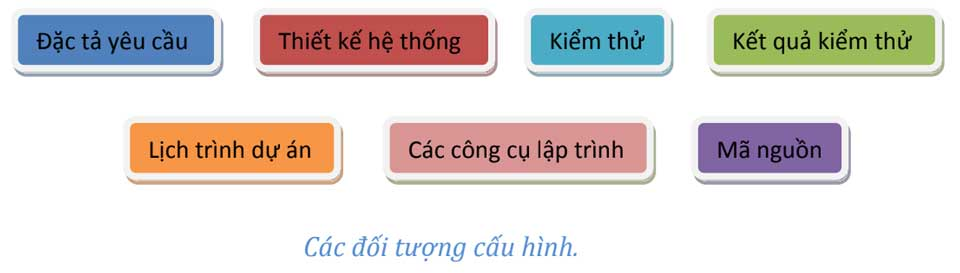

Phần này tớ sẽ giới thiệu các bạn phần quản lý cấu hình của dự án.
"Quản lý cấu hình là bộ khung tổ chức cho phép chúng ta quản lý sự phát triển của tất cá các sản phẩm trên toàn bộ hệ thống thông qua các giai đoạn phát triển phần mềm."
Ở trong bài viết này, tớ sẽ giới thiệu cách tớ quản lý cấu hình blog như thế nào. Và phần lý thuyết, bạn có thể xem thêm tại các link phía dưới.
Để xem nào, blog của tớ cũng không phải là dự án gì to tát cả. Do đó, tài liệu cũng vừa đủ để biết công việc sẽ làm và sau này mở ra coi lại để bảo trì cho dễ. Tớ có một số đối tượng cần quản lý sau.
Và một cái quan trọng nữa là Log - nhật ký làm việc (tức là seri bài viết các bạn đang xem).
Tớ tạo một folder trên Google Drive để lưu trữ file Sketch và Balsamiq. Còn folder Resources để lưu hình dùng cho blog.

Tớ đã tạo một repository từ năm 2014 đến giờ trên GitHub. Và định dùng GitHub Pages để tạo một website thay vì thuê host. Bạn chỉ cần làm theo hướng dẫn dưới đây là được.
Link: https://pages.github.com


Như các bạn đã thấy, code của tớ được phân cấp theo dạng một trang web tĩnh (static web). Do GitHub Pages chỉ hỗ trợ static web nên mình mượn cấu trúc thư mục để làm đường dẫn cho bài viết.
blog/ | các bài viết thuộc mục Nhật Ký node_modules/ | các packages hỗ trợ trong việc code public/ | resources gồm hình ảnh, CSS, JS được public src/ | mã nguồn chính của blog |__ content/ | nội dung các bài viết |__ indexes/ | mục lục của blog và tutorial |__ js/ | code JavaScript |__ scripts/ | code Template Engine |__ scss/ | code SASS |__ template/ | giao diện mẫu để chạy Template Engine tutorials/ | các bài viết thuộc mục Chuyện Lập Trình .gitignore | đánh dấu các file, thư mục không cần thêm vào Git about.html | trang giới thiệu contact.html | trang liên hệ index.html | trang chủ mix-manifest.json | file cấu hình của Laravel-Mix package-lock.json | file cấu hình của Npm package.json | file cấu hình các package sử dụng cho blog privacy-policy.html | trang chính sách bảo mật README.md | file giới thiệu repository robots.txt | file cấu hình cho bot sitemap.xml | file đánh chỉ mục hỗ trợ SEO webpack.mix.js | file cấu hình của Laravel-Mix
Thay vì dùng Bower, Yarn thì mình muốn dùng NPM để đơn giản quản lý package và đơn giản công việc. Các packages mình dùng cho blog gồm:
Để có động lực hoàn thành công việc, tớ chia ra từng giai đoạn nhỏ.
Tớ đã xong công việc chuẩn bị. Giờ bắt đầu vào công việc lập trình.